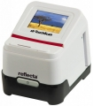

无忌
器材库
全部器材
产品年表
名词百科
榜单
器材库
> 底片扫描仪 > x6-TouchScan

reflecta
x6-TouchScan
分类
底片扫描仪
点评
0 条
图片
0 张
评测
0 篇
x6-TouchScan支持135和110格式胶片，光学分辨率为2400×2400dpi，900万像素，搭载一块2.8\
产品类型
底片扫描仪
综合评分
暂无评分
无忌评测
暂无评测
规格参数
网友点评
(0)
产品图 / 样片
(0)
评测文章
(0)
详细规格
发布日期
2011-05-02
厂家推荐价格
159.00 （欧元）
可支持的胶片格式
35mm胶片, 5×5cm幻灯片, 110mm胶片
扫描元件
900万像素CMOS
光源
白光LED灯×3
光学分辨率
2400dpi
扫描位深
30bit
密度范围
3 Dmax
扫描速度
1800 dpi：2秒
有效扫描区域
24.3×36.5mm
接口
USB 2.0, Tv-Out (NTSC/PAL)
电源要求
锂电池或AC适配器供电
尺寸
104×153×112mm
重量
0.5kg
该产品暂无存档的网友点评
该产品暂无存档的产品图
评测 / 相关文章
该产品暂无存档的评测文章